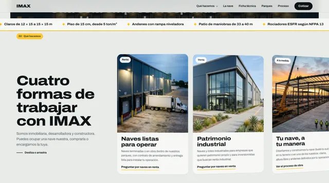
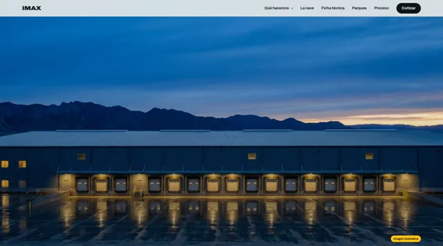
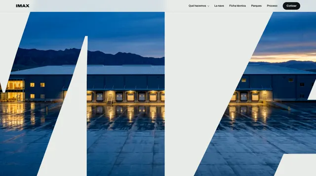

El tamaño de IMAX es el mismo en todas. Cambia cuánto ocupa la portada: la de hoy llena la pantalla y pide casi dos pantallas más de scroll antes de llegar a la siguiente sección. Cada fila muestra lo que se ve al abrir y al ir bajando.
A. CortaIgual que hoy, pero la entrada por la M y la nave llegan con menos de la mitad de scroll.1.6 pantallasVer en vivo
Al abrirBajando ⅓ de pantalla⅔ de pantalla1 pantalla1½ pantallas
B. LosaIMAX sube; la losa de concreto termina abajo de la frase con un canto amarillo y debajo ya se ven los andenes de la nave. Menos scroll, como la A.1.6 pantallasVer en vivo
Al abrirBajando ⅓ de pantalla⅔ de pantalla1 pantalla

1½ pantallas
C. Losa bajaLa losa solo cubre la palabra; la frase va sobre la nave y se ve más imagen desde el inicio. Menos scroll, como la A.1.6 pantallasVer en vivo
Al abrir

Bajando ⅓ de pantalla⅔ de pantalla1 pantalla1½ pantallas
ActualLa que está publicada hoy, para comparar.2.3 pantallasVer en vivo
Al abrir

Bajando ⅓ de pantalla⅔ de pantalla1 pantalla1½ pantallas